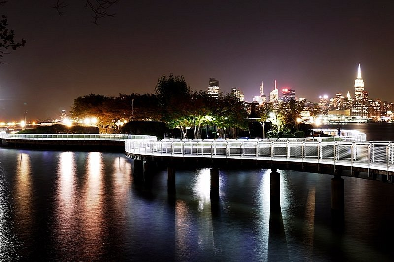
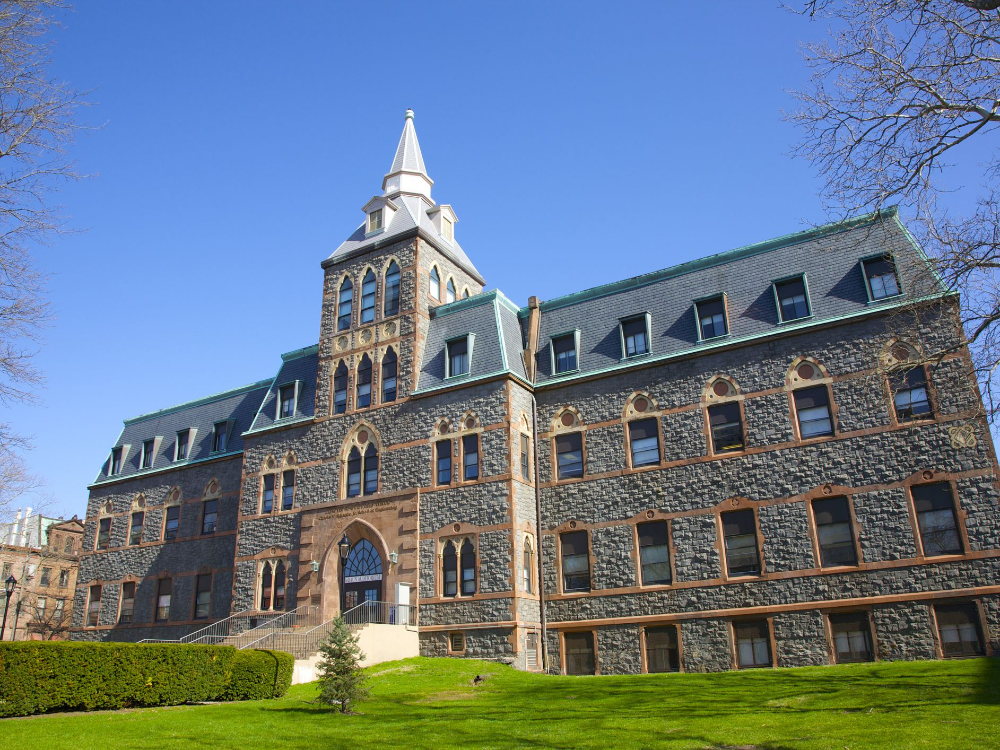
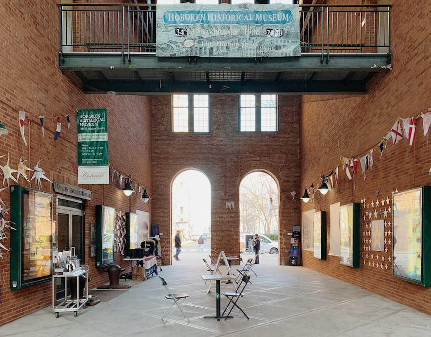

Hoboken Walkway
View on Google Maps

The Hoboken Walkway is a loop that stretches for about 14 miles between Hoboken and Jersey City. This walking and cycling pathway has stunning views of the Manhattan skyline, especially at night.
Along the walkway are a large variety of restaurants, parks, piers, businesses, and the Hoboken Terminal.
Stevens Intitute of Technology
View on Google Maps

Stevens Institute of Technology is a private university that was founded in 1870. It is home to a variety of study areas, sports, and has a large diversity of students and faculty from around the world.
As it is located on Castle Point Terrace, the school sits accross the Hudson River from NYC and is one train ride away.
Hoboken Historical Museum
View on Google Maps

The Hoboken Historical Museum was founded in 1986 and is one of the historical landmarks of the city. It has a varity of art exhibitions that are constantly being rotated as well as
well as books and educational programs for all. The museum has a $5 asmission charge, but remains free for children and memebers.